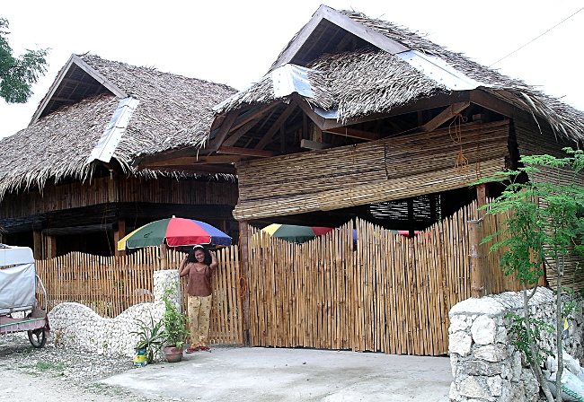
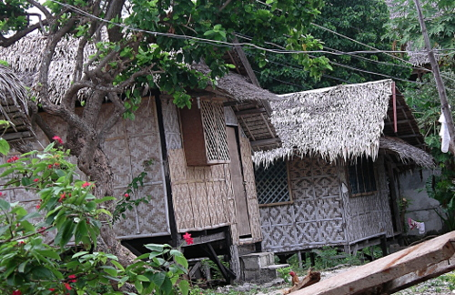
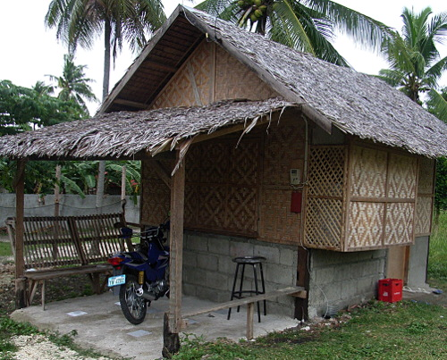
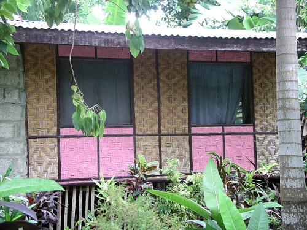
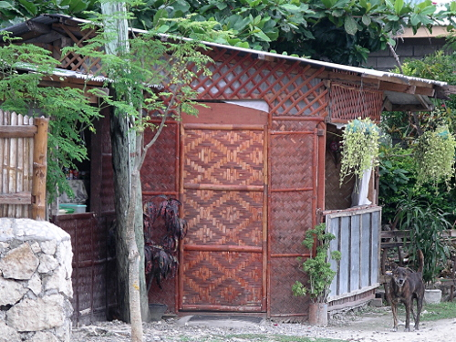
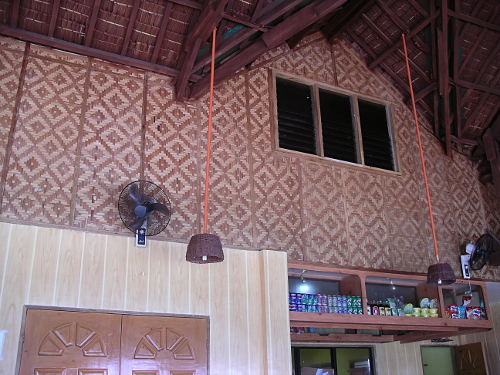
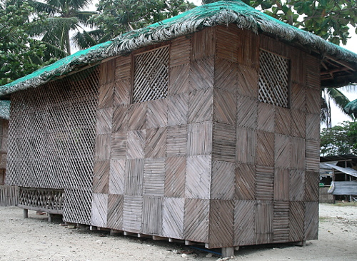
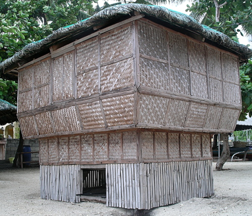
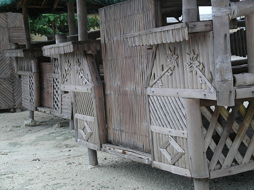
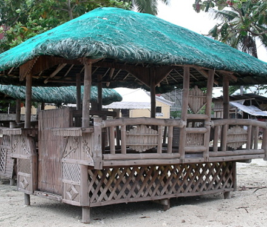

Philippine Bamboo Designs
How is bamboo used in the Phillipines? In addition to the woven panels, other uses are rather popular, as these photos show.
Bamboo fencing, gate, roll-up shades, and trim.
| A typical nipa hut in the Philippines features nipa roofs, bamboo panels, and is elevated on "stilts". The most comon bamboo panel design is the double diamond, seen on these two structures. |  |
| This nipa hut has a concrete slab patio and foundation plus cinder block lower wall. Also note the cantilevered addition on the right. Rigid building materials such as block is cleverly limited to the lower portion, with the much more flexible bamboo used in the upper portion. |  |
| An attractive blend of painted and natural bamboo panels. This roof utilizes corrugated metal -- more durable than nipa, but mercilessly hot in the blazing sun. And deadly during a typhoon. |  |
| Tastefully finished bamboo panel and frame. |  |
| Inner walls at an upscale beach restaurant. |  |
| The next four photos taken at the same beach show more use of bamboo in building. Structures were used for equipment storage, changing rooms, office space, and hanging out. |  |
| Note the nipa roofs have been covered with netting to protect from birds and wind. Additional photos show how varied designs can be. |  |
|  |  |

| next: Bamboo Panel Construction |
| back: Flores Again | ||